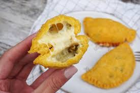

----Empanada----

Cheese empanada
An empanada is a stuffed bread or pastry baked or fried in many countries of Latin America
and the south of Europe. The name comes from the verb empanar, meaning to wrap or coat in
bread. Empanada is made by folding a dough or bread patty around the stuffing.
Ingredients
- 12 (one 11.6-ounce package) frozen store-bought empanada dough discs, defrosted
- 1 1/2 cups (6 ounces) crumbled queso fresco (fresh Mexican cheese)
- 2 tablespoons finely chopped fresh parsley
- 1 1/2 teaspoons MAGGI Granulated Chicken Flavor Bouillon
- 1 tablespoon vegetable oil
How do I make it?
- Preheat oven to 375° F. Grease large baking sheets.
- Combine cheese, parsley and bouillon in medium bowl; set aside.
- Place 1 heaping tablespoon cheese mixture in center of each pastry disc. Wet edges with water; fold in half and crimp edges with fork. Place empanadas on prepared baking sheets; brush lightly with oil.
- Bake for 25 to 30 minutes or until golden. Serve warm.